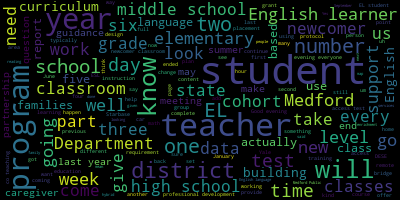

[Teixeira]: Hi, good evening, everyone.
[Teixeira]: Dr. Cushy.
[Teixeira]: The EL Summer Enrichment Program, we have various programs that happen starting in the end of June.
[Teixeira]: It starts with a one-week STEM camp at Hanscom Air Force Base through STAR Labs, which is a week-long STEM camp for students in fifth and sixth grade.
[Teixeira]: They do robotics, engineering, computer design.
[Teixeira]: They build rockets.
[Teixeira]: They get to launch them.
[Teixeira]: It's kind of fun.
[Teixeira]: and after that ends then we roll into our summer enrichment program which it's basically uh k through eight uh k through five is at the missatuck our numbers actually doubled this year we typically have about 45 students in the program during the summer and this year we had almost 100.
[Teixeira]: Then at the middle school, which we host up at the high school, we run a middle school summer enrichment program.
[Teixeira]: And then we do an add-on program for credit recovery for high school students to get what they need.
[Teixeira]: So if they failed a class, it's a combination of enrichment and credit recovery.
[Teixeira]: And then we also offer tutoring at the Medford Public Library, and that's for our secondary students.
[Teixeira]: Teachers will do office hours, just one hour, and it fluctuates based on availability.
[Teixeira]: It's mornings and evenings.
[Teixeira]: And students who need help with getting their summer reading done, picking out books, any other math or history packets at the secondary level, there's a teacher there to kind of guide them through that through the summer.
[Teixeira]: And those, Dr. Cushing, if you want, I just have pictures of what we did.
[Teixeira]: Also at the elementary program, we contracted with High Touch High Tech, which is a science organization that's in Massachusetts and Maine, I think.
[Teixeira]: And they come and we get to pick what they're going to do.
[Teixeira]: I think last year was bridges, beams, and columns.
[Teixeira]: This year they did electricity.
[Teixeira]: They learned how to build circuits.
[Teixeira]: And so the scientists come and they rotate through the grades throughout the day.
[Teixeira]: Dr. Cushing?
[Teixeira]: And then with the elementary program, because this is enrichment and it's paid for out of Title III, we try to plan a field trip every week.
[Teixeira]: Because of our increased numbers, we actually had to separate out.
[Teixeira]: So all of the students got to go to the Franklin Park Zoo.
[Teixeira]: But the Children's Museum and the Aquarium, we divided it K-2 and 3-5 to offset the numbers because Title III will pay the admission, the transportation costs, everything for the students for the enrichment program.
[Teixeira]: Dr. Cushing.
[Teixeira]: These are just various photos of the field trips that the students went on.
[Teixeira]: And the summer curriculum is tied into what the students are learning.
[Teixeira]: So, you know, there's an animal component, there's sea life, there's, you know, general academics that also happen.
[Teixeira]: And then these are photos from Starbase.
[Teixeira]: This was actually building bridges.
[Teixeira]: And this was CAD design for programming the robots too.
[Teixeira]: And then again, as Ms.
[Teixeira]: Bowen said, this wouldn't have happened without the support of the teachers.
[Teixeira]: This is the list of all of the teachers.
[Teixeira]: I was also fully staffed.
[Teixeira]: I was very lucky because of the increased numbers that I managed to get some additional staff to support the program.
[Teixeira]: And then also a special thanks to Anthony Petralis because
[Teixeira]: what we do is our program ends at noon but what we've done with him is arranged that we have 30 slots for the after-school program that they can go into summer fun i provide the teachers as an add-on so students can stay and get the full day in if they choose
[Teixeira]: So we took a list.
[Teixeira]: So we send out a separate permission slip after students show up and register, and we keep a separate list.
[Teixeira]: So as students, not every student that signed up could go on to Summer Fun because we only have the 30 slots.
[Teixeira]: We can't overwhelm the program.
[Teixeira]: but anyone that signed up for it.
[Teixeira]: So if a student was absent, we could rotate through, we would call and say, oh, you know, child can stay today.
[Teixeira]: So almost everybody got, you know, that wanted to got to experience it at some point.
[Teixeira]: I wish I had an answer.
[Teixeira]: It was a surprise when the registration started coming in and we were counting up the numbers and making the class lists.
[Teixeira]: I just, I don't have a reason.
[Teixeira]: Like I said, it gave me it because of the registration and we'll accept registrations the day of, because again, it's enrichment.
[Teixeira]: Again, it allowed us to give us a little lag time because we had that week off to recruit two more teachers for the program.
[Teixeira]: Yes, it all comes out of the Title III grant.
[Teixeira]: So like I said, they were building bridges, so I don't know if that's what that program would be for, but then the other program in the other picture was coding so they could actually program their robots to follow a track, and then the robots fight the little robot wars.
[Teixeira]: That's amazing.
[Teixeira]: It was a little more than just one week.
[Teixeira]: Um, sure.
[Teixeira]: Hi, I'm Baltic Sarah.
[Teixeira]: I'm the director of the English learner education program for the Medford public schools.
[Teixeira]: Yes, we can see you.
[Teixeira]: Thank you.
[Teixeira]: So we use the map data a little bit differently.
[Teixeira]: We'll have all of our students, whether they're newcomers or Yale pullout students, they take the math map test because that's informing us, obviously,
[Teixeira]: Fifth grade looks different in Brazil than it does in China, than it does in Haiti, than it does in the US.
[Teixeira]: So because it is based on the standards, we can target what our students are missing, not due to lack of instruction here, but what they didn't get in their countries prior to coming in, because we place them by grade level.
[Teixeira]: So if they're in seventh grade and they missed fifth grade skills, we can hone in on that using the map data.
[Teixeira]: And then for the ELA map, only our pull-out students who are level 3-4 EL or higher will take the map ELA test.
[Teixeira]: And we use that data to make our placement decisions.
[Teixeira]: If they're ready to exit from the EL program, it's another piece of data in addition to the access test, if we can place them in mainstream classrooms.
[Teixeira]: And then we also just, we use the science in a similar way.
[Teixeira]: MCAS is just fifth and eighth grade there, but it helps us kind of hone in on what skills that they may be missing because of cultural differences with educational systems in different countries.
[Teixeira]: Yeah, so we do have a separate ELD curriculum, English Language Development curriculum.
[Teixeira]: And I'm not sure.
[Teixeira]: I have a different list that I added, and I may have missed this, Suzanne.
[Teixeira]: As you were going through it, I didn't add my stuff.
[Teixeira]: So we have English language development curriculum based on students' grade level and their English language proficiency level.
[Teixeira]: And so currently right now what's happening in the elementary, because we now have a new program into reading, the HMH program, our EL curriculum hasn't changed, but we're updating the curriculum to support the new materials being used to deliver that curriculum.
[Teixeira]: Good evening.
[Teixeira]: Good evening, everyone.
[Teixeira]: I will be fast.
[Teixeira]: All right.
[Teixeira]: So you guys got a pretty thick packet.
[Teixeira]: We're not gonna go over the whole thing.
[Teixeira]: I sent you the ELE requirements because even though it just says like parent notification, there's like three pages of that.
[Teixeira]: So I just wanted you to understand what the requirements are.
[Teixeira]: on everything that this review does.
[Teixeira]: So it occurs every six year with a three-year check-in.
[Teixeira]: And for the past year, I've been working on this with DESE, uploading, they wanna know our procedures, they wanna see samples of all of the documentation that we send home to caregivers, our report cards, our progress reports, and then they pull individual student records.
[Teixeira]: And they look at, you know, they want to make sure if it's a student who's bilingual who has an IEP that there was an interpreter at their meeting and they, you know, want verification for the sign in sheets and all of this gets uploaded to Desi's portal.
[Teixeira]: It was probably about 1000 pages of paperwork that they got in preparation for this review.
[Teixeira]: They do that every six years.
[Teixeira]: They came to the district, they interviewed caregivers, students, teachers, administrators, and then they did walkthroughs through the classroom.
[Teixeira]: So that's what the tiered focus monitoring is for the EL department.
[Teixeira]: So this is the criteria.
[Teixeira]: There are 12 different areas that they look at.
[Teixeira]: Like I said, each area has subgroups and pretty involved compliance at the federal level and also at the state level.
[Teixeira]: And this is the legal requirement and the implementation.
[Teixeira]: This was a sample just to show you what they look for for one criterion.
[Teixeira]: So upon their review, they give a rating system for each criterion, and then if it's implemented, the requirement's substantially met in all important aspects.
[Teixeira]: If it's partially implemented, the requirement in one or several of those aspects, like the subgroups, may not be met, and then not implemented is the requirement is substantially not met.
[Teixeira]: So we met or exceeded the state and federal implementation requirements in 10 out of 12 focus areas.
[Teixeira]: we received partially implemented in two out of the 12 focus areas.
[Teixeira]: So the two areas we had were ELE program placement and structure, which again, that's like three pages of requirements, and ELE 14, which is the licensure requirements.
[Teixeira]: The program and placement structure was a result of being under 50% for students making progress on the access test.
[Teixeira]: we are at 38%.
[Teixeira]: But I did pull the state data and surrounding districts just to show you we're all in the same boat.
[Teixeira]: We just happen to have a curriculum, I mean, a coordinated program review or a tiered focus monitoring this year, but we are at 38%.
[Teixeira]: Now, I realize we don't wanna be in line with the state, we wanna be higher.
[Teixeira]: So we do have to do corrective action on how we're going to adjust that.
[Teixeira]: And so we did.
[Teixeira]: So this is a report that came out in November 23 about the rising numbers of unmet needs with immigrant newcomer students in Massachusetts.
[Teixeira]: So again, this isn't a Medford issue.
[Teixeira]: It is a statewide issue, but we are taking steps to help course correct with this.
[Teixeira]: So this is the action plan to get us out of corrective action for ELE 5, and I'm not going to go over it because you have it all in your packets.
[Teixeira]: This was submitted to the Department of Elementary and Secondary Education, and they approved this plan as a feasible plan to make the adjustments that we need to.
[Teixeira]: There are a lot of things happening in the district that I do believe will contribute to increased scores.
[Teixeira]: Everything from our new curriculum for early literacy, the science of reading that's happening in the schools, because our EL students are integrated in all of those classes, that will be a factor.
[Teixeira]: in achievement and growth.
[Teixeira]: And then we have the MAP growth, we have DIBLS testing, so we can do our formative assessments and check-ins throughout the year and adjust accordingly.
[Teixeira]: ELE 14 was on licensure requirements.
[Teixeira]: This wasn't licensure for EL, this was a concern with Gen Ed classroom teachers not having the SEI endorsement.
[Teixeira]: So this is a relatively easy fix.
[Teixeira]: Because our numbers have grown dramatically in the last few years, there were many teachers who couldn't take the SEI class because they had to have EL students in their classroom in order to take that class.
[Teixeira]: That was one of the requirements when DESE was offering that.
[Teixeira]: And so if they never had an EL student in their class, they were never flagged with DESE as needing the endorsement.
[Teixeira]: But as our numbers have grown and our EL students are in more and more classrooms, that's what triggered this.
[Teixeira]: And we think we have about 18 teachers who need the endorsement.
[Teixeira]: We're working with principals to get an exact list.
[Teixeira]: And then in the fall,
[Teixeira]: We will work with the teachers to help them get the endorsement that they need.
[Teixeira]: And so by January of 2025, we should be all set.
[Teixeira]: Any questions?
[Teixeira]: Have a great night.
[Teixeira]: Good evening, everyone, and welcome to our new members.
[Teixeira]: Tonight's presentation is an overview of the EL program to kind of help the new members understand what's happening in Medford with our English learners.
[Teixeira]: The program that we have is a sheltered English immersion program.
[Teixeira]: And that's a two component program where we ensure that students get access to grade level content curriculum, as well as English as a second language instruction to support English language development among our learners.
[Teixeira]: We have programs in every elementary school.
[Teixeira]: We have newcomer programs for students who are at the foundational level of English language acquisition at the McGlynn and at the Missituk in grades one through five.
[Teixeira]: And then we have EL pullout in every elementary school for students who are at the transitional level, which is three through five.
[Teixeira]: And then at the middle school, we have a program at the McGlynn Middle School, which encompasses newcomers as well as ESL.
[Teixeira]: And then at the high school, we have a newcomer program and ESL program.
[Teixeira]: And we offer, we have a dedicated teacher on the vocational side of the house to support newcomer students as well as transitional students with the CTE programs that we offer.
[Teixeira]: How these decisions are made is based on when students register, they fill out a home language survey form, which is a federal form that everyone's required to complete.
[Teixeira]: When we complete the registration, we test the students for their English language proficiency.
[Teixeira]: It's a test that include all four domains.
[Teixeira]: So it's four separate tests and listening, reading, writing, and speaking.
[Teixeira]: We administer the test, we get a level, we create a schedule and determine which program the students will go in.
[Teixeira]: Once the students have been in the program for a year, they take something called ACCESS.
[Teixeira]: That is a state mandated test similar to MCAS, but it's specifically for English learner students.
[Teixeira]: Again, it measures the four domains of language.
[Teixeira]: And based on this, they take the test in January, we get the results the end of May, and then we make our placement decisions in June for the following September.
[Teixeira]: This is only one piece of data that we use to make our placement determinations.
[Teixeira]: We use a lot of district determined measures, such as map scores, we do writing prompts that are used, that are scored using the WIDA writing rubric, which is what the ELD curriculum is based upon.
[Teixeira]: So enrollment numbers, I have the history going back to 2015-16, and I'm keeping it in there because eventually we're going to hit 700 students, and I want to know how many years it took us to double our numbers.
[Teixeira]: So at this moment, and this says 631, but today we just had 632 join Medford.
[Teixeira]: So we have 632 English learner students.
[Teixeira]: That number is in real time.
[Teixeira]: At the end of the year, when DESE runs their report, the number will go down because if you see 22, 23, that was at 528, but we actually at one point had 580 students last year.
[Teixeira]: DESE counts a student as an English learner in the previous year if they are recorded in our SIMS data, our student information management system, for two cycles.
[Teixeira]: So when we do our October report and our March report, then the student counts.
[Teixeira]: If the March report and the June report, the number counts.
[Teixeira]: But any students that leave us in the interim, even though they may have been with us for three months, don't count in those numbers.
[Teixeira]: So if you look at the bottom, we have how many students were tested.
[Teixeira]: So, which one?
[Teixeira]: This year, just since the school year.
[Teixeira]: We've tested 391 new students.
[Teixeira]: in the district.
[Teixeira]: Of those 391, 259 qualified for EL services.
[Teixeira]: But then we've also had 134 students withdraw from the district.
[Teixeira]: We have a very fluid population of English learners.
[Teixeira]: We have students who will come here because they may have existing family.
[Teixeira]: They get started here in Medford, then they find their own housing, they move out.
[Teixeira]: We have students that go back to their home country.
[Teixeira]: We have students that just leave the district to, unfortunately, many high school students, they go into the workforce to support and help their families.
[Teixeira]: So we've had 134 withdrawals this year, but basically 765 students have passed through our doors to date for English learners.
[Teixeira]: So with that, we have university partnerships.
[Teixeira]: So we have a partnership with Lesley University.
[Teixeira]: They have an elementary education program with an add-on Yale license.
[Teixeira]: And what that means is while they're completing their coursework, they do a year-long internship in one of our newcomer classrooms in the district.
[Teixeira]: So we get,
[Teixeira]: a teacher candidate from August through June.
[Teixeira]: And the great piece of this is that essentially we get to train the teacher, and when we have openings, we can hire them.
[Teixeira]: They're certified in both areas, and they're familiar with the district, they're familiar with our protocols.
[Teixeira]: The other university partnership we have is the UMass program.
[Teixeira]: Last year, I presented to you that we were part of a grant opportunity with the US Department of Education to have 15 seats for a free half masters in applied linguistics.
[Teixeira]: and that gets teachers an ESL certification.
[Teixeira]: So it's for existing teachers in the district to kind of broaden their teaching acumen so that they can put forth all of the teaching strategies beyond retail into their classrooms.
[Teixeira]: So this program ends in June.
[Teixeira]: We had 13 people successfully complete the program.
[Teixeira]: and they'll be duly certified in their content area as well as ESL if they pass the MTEL.
[Teixeira]: So we have a District English Learner Advisory Council that is similar to Special Education CPAC.
[Teixeira]: I call this, many districts will call it an LPAC, English Language Parent Advisory Council.
[Teixeira]: I like to take the word parent out of it because many of our students are here without their parents.
[Teixeira]: And so this is the equivalent.
[Teixeira]: It's the District English Learner Advisory Council.
[Teixeira]: We have monthly meetings.
[Teixeira]: Eventually what should happen with this group is that the caregivers will eventually take it over.
[Teixeira]: It's challenging because they all don't speak the same language.
[Teixeira]: And so we utilize high school students who are bilingual to come to these meetings, to serve as interpreters, kind of bridge the gap between the different languages in the group.
[Teixeira]: We have people who have signed up to be leaders.
[Teixeira]: And they haven't started scheduling and running their own meetings, but it's a work in progress.
[Teixeira]: And with that, we've also contracted some seminars for caregivers through the Massachusetts Partnership for Youth.
[Teixeira]: And in March, the presentation was on a healthy balance screen time.
[Teixeira]: This was to support our caregivers with establishing boundaries with devices in their home, how they can support the school, how they can use them as learning tools and some internet safety.
[Teixeira]: and next month's presentation is going to be on vaping.
[Teixeira]: Then we've also partnered with the Welcome Project in Somerville.
[Teixeira]: The Welcome Project helps provide...
[Teixeira]: caregivers with English classes for free.
[Teixeira]: They got a grant a year and a half ago to expand outside of Somerville.
[Teixeira]: I was working in partnership with Sarah Londgren from the Welcome Project and we ended up creating classes here in Medford.
[Teixeira]: We hold them at the Medford Public Library.
[Teixeira]: This way here, families don't have to come into the schools, get quarry checked for the classes or anything like that.
[Teixeira]: They have a beautiful new space in the library that they've been using.
[Teixeira]: We've run three in-person classes, and then those are on Tuesdays and Thursdays, and then we have virtual classes in the evening.
[Teixeira]: So the funding for this grant that the Welcome Project got is ending this year.
[Teixeira]: This will be the last class, but we're going to continue with the classes in the fall, and we'll use a federal grant, Title III, to continue these for our caregivers.
[Teixeira]: And then Tech Goes Home is another partnership we have.
[Teixeira]: This is an organization in Boston that allows us to teach digital literacy to our caregivers.
[Teixeira]: We've trained Medford teachers who will work in the evening.
[Teixeira]: We've created a curriculum for the caregivers.
[Teixeira]: It's everything from how to navigate the Medford Public Schools website, how to check for school lunches, how to communicate with your child's teacher, how to send an email, how to find English classes.
[Teixeira]: It's a 15 hour course.
[Teixeira]: And I actually just found out two hours before this meeting, our course was approved.
[Teixeira]: So we'll be running another one.
[Teixeira]: It begins August 8th and it will end in June.
[Teixeira]: And at the completion of this, the caregivers get a free Chromebook, a free year of internet access, headphones, carrying case.
[Teixeira]: In other news, the Yale department just completed its tiered focused monitoring.
[Teixeira]: This is similar to what special education just had to go through with the Department of Ed.
[Teixeira]: Every three to six year, every three years on a three year cycle, Desi comes in and does a complete audit of the department.
[Teixeira]: There are 12 criteria.
[Teixeira]: 11 seems to be cut off.
[Teixeira]: I mean, number 12 seems to be cut off on my computer.
[Teixeira]: But these are the criteria that they measure the efficacy of the EL program with.
[Teixeira]: So for the past year, I've had to upload hundreds of pages of documentation for each of these criteria and then
[Teixeira]: criteria.
[Teixeira]: And then they came into the district in February, and they did classroom walkthroughs at the McGlynn, the Missittuck, the McGlynn Middle, and then also the high school.
[Teixeira]: They interviewed caregivers.
[Teixeira]: They interviewed teachers, general education teachers, EL teachers.
[Teixeira]: They interviewed students and administrators.
[Teixeira]: They'll be putting together a final report.
[Teixeira]: We should have it in the next few weeks.
[Teixeira]: I'm sure I'll be back here to explain the findings in their report to you.
[Teixeira]: And then the new literacy program at the elementary level into reading.
[Teixeira]: These are the new materials that were purchased that the teachers have received extensive PD on the EL teachers are included in this, whether they're a newcomer teacher or pull out teacher, even though we have our own English language development curriculum.
[Teixeira]: What the EL teachers are doing is they're modifying the curriculum to support components from the inter-reading program so that the goal is that students leave newcomers, will go into a mainstream classroom, and while they're in the mainstream classroom, they'll still get EL support, but all of the inter-reading, all of the strategies for early literacy will be the same, so it's not,
[Teixeira]: a culture shock when they change levels.
[Teixeira]: So there's a team of teachers putting together the curriculum, taking the old curriculum and aligning it with the new materials.
[Teixeira]: And then talking points is you'll hear people talk about this all the time.
[Teixeira]: This is a two-way communication platform that the district purchased.
[Teixeira]: It pulls information from our student information system to allow teachers, administrators, district administrators to engage in two-way communication with our families.
[Teixeira]: This isn't just for English learner families.
[Teixeira]: It's basically a text message system.
[Teixeira]: And if in our home language or in the home language is identified as something other than English, the app automatically translates the message.
[Teixeira]: So if it goes, you know, if Portuguese was selected.
[Teixeira]: Teacher sends a classroom message home.
[Teixeira]: It gets translated into Portuguese just for that family.
[Teixeira]: The family responds in Portuguese.
[Teixeira]: It translates it back to English for the teacher.
[Teixeira]: So teachers have been using this now for a little over a year with the district subscription that we purchased.
[Teixeira]: And I just pulled last week's data to show you like almost 1,700 messages were sent home in a week.
[Teixeira]: Another translation device that we purchased for teachers and for school staff who interact with multilingual families is something called Pocket Talk.
[Teixeira]: It's an oral translation device.
[Teixeira]: So you hold the button, you choose your target language, you speak, it interprets it, flip it, the other person speaks their language, it transfers it, translates it back into English.
[Teixeira]: These were given to all building principals, all building secretaries, nurses, anyone that comes into contact with caregivers where they may need on-the-spot instant translation.
[Teixeira]: And this isn't going to take the place of talking points.
[Teixeira]: It's not going to take the place of hiring interpreters for in-person meetings.
[Teixeira]: This is just the on-the-fly, you need an interpreter.
[Teixeira]: We ended up purchasing 45 in the district and then Chad Fallon bought 15 for the CTE teachers because they'll have newcomer students going through the CTE rotations.
[Teixeira]: And sometimes it's really helpful for those teachers to be able to translate, especially where, you know, safety concerns in the shops right there on the fly.
[Teixeira]: And then all of the newcomer teachers have them as well.
[Teixeira]: And then for professional development, the EL department offers professional development outside of the typical professional development days.
[Teixeira]: All content teachers need to earn 15 hours of professional development in SEI or ESL strategies.
[Teixeira]: So these are on optional PD days.
[Teixeira]: These are in the evenings.
[Teixeira]: So teachers, it helps them recertify, but these topics were based on what teachers have asked for and what we've seen in the district.
[Teixeira]: And then coming up, we have summer enrichment planning.
[Teixeira]: We offer summer enrichment for elementary, middle, and high school.
[Teixeira]: This slide has changed from what I gave you, because I realized I missed some stuff.
[Teixeira]: So I'll give the new one to Lisa for you.
[Teixeira]: We run an elementary summer program, K-5 at the Missittauk.
[Teixeira]: And then I've partnered with Anthony Petrelis with Summer Fun, and I will fund teachers to work in the afternoon program, so they can take Yale students who want to stay longer for the day, and it's at no cost to the families.
[Teixeira]: We have a program for students in grades five and six.
[Teixeira]: It's called Starbase.
[Teixeira]: It's at Hanscom Air Force Base.
[Teixeira]: It's a STEM lab.
[Teixeira]: It's a week-long STEM lab.
[Teixeira]: Students get to use 3D printers.
[Teixeira]: They have robotic wars with cars.
[Teixeira]: They do the derby cars.
[Teixeira]: They launch rockets.
[Teixeira]: They do chemistry experiments.
[Teixeira]: That's offered through Starbase, and we've been doing that now for, I think, six years.
[Teixeira]: And then we have middle school summer enrichment at Medford High School, and then we do credit recovery for students in grades nine through 12, nine through 11, and then in grades six through 11.
[Teixeira]: We offer summer reading support.
[Teixeira]: I can use Title III funds to pay teachers to do office hours at the Medford Public Library.
[Teixeira]: So any middle school and high school students that need help with their summer reading, choosing a book, any of their math packets or history packets that they get, there's somebody there
[Teixeira]: two times a week, mornings and late afternoons to get that support.
[Teixeira]: And then this leads me to my last slide, which is an ask for the committee.
[Teixeira]: As our numbers are increasing, we have a large influx of students in kindergarten this year.
[Teixeira]: And I never have a crystal ball, I can never tell exactly how many students we're going to have.
[Teixeira]: So I have to base it on trends from the previous year.
[Teixeira]: And so, Basing, we had, I think, 38 newcomer students last year in kindergarten, and we currently have 32 students in first grade newcomer classes.
[Teixeira]: Now, that's not all from that class, that's students who have come in through the year, but that's how I gauge what my numbers are going to be.
[Teixeira]: This year, we have 20 more newcomer students than we did last year.
[Teixeira]: And so we are going to need another first grade classroom for newcomer students, and preferably at the McGlynn, because that is where the bulk of the students are.
[Teixeira]: I won't know the exact number until the end of May, beginning of June, because with the kindergarten students, they take that access test in January, and there is so much growth in a kindergarten student from January to June, that it's not an accurate measure.
[Teixeira]: we take the two options.
[Teixeira]: If the teachers say this student is ready to be reclassified as a former English learner student, we give them a test called the WAPT.
[Teixeira]: Again, it measures all four domains, reading, writing, listening, and speaking.
[Teixeira]: And that will give us the determination if they have the cut score to just go into a general education classroom.
[Teixeira]: If they were a newcomer student and the teacher is recommending that they go into first grade newcomers, they also give that WAPT test.
[Teixeira]: That will give me the data I need to know that, yes, they have to remain in newcomers.
[Teixeira]: And so that won't happen until the beginning of June.
[Teixeira]: But based on previous trends, this is what I'm predicting.
[Teixeira]: Any questions?
[Teixeira]: Well, and that happens with the CTE exploratory programs.
[Teixeira]: All of the new students go through the same rotations, and they're not a cohort.
[Teixeira]: It's six in this group, five in this group, so they are.
[Teixeira]: the students are integrated with everyone.
[Teixeira]: And those rotations include all the CTE exploratory programs as well as the arts.
[Teixeira]: So we have been increasing staff throughout the years, and that is something, especially the elementary strand of newcomers at the McGlynn, which is where the biggest numbers are.
[Teixeira]: The way the program is structured is it's sustainable to continue to add new students, but that's why I brought up the first grade class, because I know that's not sustainable, because they can't have two first grade newcomer classrooms with 25 students in them each.
[Teixeira]: It is, but what happens is with any other new students who are non-Yale that go to the Andrews or that come into middle school, if they don't need Yale programming, they go to the Andrews.
[Teixeira]: So the numbers are actually, and I'd have to look up what the exact numbers are, but the numbers between the two buildings are similar.
[Teixeira]: It's equitable.
[Teixeira]: Okay.
[Teixeira]: And the last thing that I want to say on the last slide is that none of this work could happen without the EL teachers, because every committee I mentioned, every DELAC, there are people that I have EL teachers who work on all of those programs that I just described.
[Teixeira]: The Tech Goes Home, the summer programs, none of this work could happen without those teachers.
[Teixeira]: So thank you to them.
[Teixeira]: Hi, good evening, everyone.
[Teixeira]: Can you hear me?
[Teixeira]: Yes.
[Teixeira]: So as part of DESE's coordinated program review, which is happening at the same time with special education, they will do a complete review of the EL programs and services in this school year.
[Teixeira]: The recommendation that was posted in the AIR report
[Teixeira]: was about the fact that we have two middle schools right next to each other and only one has an EL program.
[Teixeira]: And I just wanna point out that that's equal services, it's not equity.
[Teixeira]: I'm not quite sure how it was interpreted that it wasn't equitable because if equity is giving every student what they need, the EL students at the McGlynn are getting what they need in terms of services.
[Teixeira]: That model and program was reviewed by DESE when we made the changes four years ago, and it was heralded as could be a model for the rest of the state.
[Teixeira]: But they'll re-examine it this year as part of the coordinated program review.
[Teixeira]: And we'll continue to do professional development for teachers with SEI strategies.
[Teixeira]: Every year we offer a 15 PDP course.
[Teixeira]: so teachers can recertify for their licensure renewal.
[Teixeira]: They have to get 15 PDPs in special education and SEI.
[Teixeira]: And every year we've offered a 15 hour course in SEI.
[Teixeira]: SEI is sheltered English instruction.
[Teixeira]: So anything, any classroom that has an English learner student in it is considered an SEI classroom, sheltered English instruction.
[Teixeira]: all teachers are responsible for meeting the needs of the English learners in their classroom, regardless of the grade level or the content.
[Teixeira]: And then last, we wanna conduct a review to determine if creating a lower and upper middle school, lower middle school being grades five, six, and upper middle school, seven, eight, that will address the capacity issues that the teachers brought up in the,
[Teixeira]: in the report that said about the equity, you know, having the program only in one middle school, but not the other.
[Teixeira]: And I did run some numbers if anyone's interested, but our numbers have remained consistent at the McGlynn Middle School for EL students in both newcomer classrooms and ESL services per pullout.
[Teixeira]: Good evening everyone.
[Teixeira]: through a partnership with UMass Boston's Applied Linguistics Department.
[Teixeira]: They applied for a grant with the US Department of Education and we were supportive of that and talked about how we would use that grant for the Medford Public Schools.
[Teixeira]: And what this would allow us to do is provide basically a free half of a master's degree
[Teixeira]: and applied linguistics for teachers and paraprofessionals who already possess like a bachelor's degree going into a master's program.
[Teixeira]: And what this would allow us to do is increase our capacity for not only
[Teixeira]: hiring teachers to work with English learners, but it would also give us the ability to have content teachers, not only be duly certified in their content in EL, but they would have all of the theory for second language acquisition as part of what they could bring to the classroom every day.
[Teixeira]: We will be starting this program and this is the first that it's been publicized in the district.
[Teixeira]: So we'll be working to recruit teachers.
[Teixeira]: We have teachers and paraprofessionals.
[Teixeira]: We have 15 slots available and the classes would begin in January.
[Teixeira]: These teachers would
[Teixeira]: for to get their five core classes completed as part of their master's program.
[Teixeira]: And once they complete those five courses, they're eligible for ESL certification.
[Teixeira]: And then they can continue on in the program.
[Teixeira]: They can take advantage of Medford's tuition reimbursement.
[Teixeira]: It wouldn't cover the entire remaining
[Teixeira]: portion of the master's degree, but it would pay for a chunk of it as well.
[Teixeira]: This would be available to elementary, middle, and high school teachers looking to obtain this additional master's degree and certification.
[Teixeira]: And then with that, there's coaching that's embedded in this for family and community outreach,
[Teixeira]: for providing professional development for other teachers in the buildings that they're currently working on.
[Teixeira]: And they'll be doing that as a cohort throughout the process of their program.
[Teixeira]: Any questions on that part?
[Teixeira]: The second news, which I just added onto this is, as you know, we have a partnership with Lesley University for elementary
[Teixeira]: elementary teachers or teacher seeking elementary certification, they go through a master's program to get their gen ed in grades one through six, they do a year long internship in the EL department.
[Teixeira]: in any elementary school, typically a newcomer's classroom, but sometimes that doesn't work.
[Teixeira]: And we do a balance of the gen ed classroom and EL pullout.
[Teixeira]: And Leslie is extending this program into middle and high school for secondary.
[Teixeira]: So teachers that are seeking to get their master's degree in math, the humanities,
[Teixeira]: can also do an add-on EL license if they do this year-long internship at the secondary level.
[Teixeira]: And so Medford's also working with them to establish that and get some candidates in the district for that program as well.
[Teixeira]: I don't, you know, and so that is an interesting question because there are other cohorts that will be, that will begin like in September.
[Teixeira]: And, you know, I'll stay in touch if we can't, you know, if they don't, if other districts aren't filling them, you know, to see if we can jump in on that as well.
[Teixeira]: So this happened because I was looking for interns to come do their student teaching in Medford.
[Teixeira]: through meeting the director and going through that.
[Teixeira]: And I brought her down to the McGlynn Middle School to show her the program and program design.
[Teixeira]: And that's when she started talking about this opportunity that they were applying for.
[Teixeira]: And I don't know what like years two, three and four looked like for them, but Medford would definitely be a part of that.
[Teixeira]: So it's 15 people, 15 teachers and paraprofessionals for this January cohort, but they will have other cohorts throughout the school year.
[Teixeira]: Thank you.
[Teixeira]: Good evening everyone.
[Teixeira]: through a partnership with UMass Boston's Applied Linguistics Department.
[Teixeira]: They applied for a grant with the US Department of Education and we were supportive of that and talked about how we would use that grant for the Medford Public Schools.
[Teixeira]: And what this would allow us to do is provide basically a free half of a master's degree
[Teixeira]: and applied linguistics for teachers and paraprofessionals who already possess like a bachelor's degree going into a master's program.
[Teixeira]: And what this would allow us to do is increase our capacity for not only
[Teixeira]: hiring teachers to work with English learners, but it would also give us the ability to have content teachers not only be duly certified in their content in EL, but they would have all of the theory for second language acquisition as part of what they could bring to the classroom every day.
[Teixeira]: We will be starting this program and this is the first that it's been publicized in the district, so we'll be working to recruit teachers.
[Teixeira]: We have teachers and paraprofessionals.
[Teixeira]: We have 15 slots available and the classes would begin in January.
[Teixeira]: These teachers would work
[Teixeira]: to get their five core classes completed as part of their master's program.
[Teixeira]: And once they complete those five courses, they're eligible for ESL certification.
[Teixeira]: And then they can continue on in the program.
[Teixeira]: They can take advantage of Medford's tuition reimbursement.
[Teixeira]: It wouldn't cover the entire remaining portion of the master's degree, but it would pay for a chunk of it as well.
[Teixeira]: This would be available to elementary, middle, and high school teachers looking to obtain this additional master's degree and certification.
[Teixeira]: And then,
[Teixeira]: With that, there's coaching that's embedded in this for family and community outreach, for providing professional development for other teachers in the buildings that they're currently working on, and they'll be doing that as a cohort throughout the process of their program.
[Teixeira]: Any questions on that part?
[Teixeira]: The second news, which I just added on to this is, as you know, we have a partnership with Lesley University for elementary teachers or teacher seeking elementary certification.
[Teixeira]: They go through a master's program to get their gen ed in grades one through six.
[Teixeira]: They do a year long internship in the EL department.
[Teixeira]: in any elementary school, typically a newcomer's classroom, but sometimes that doesn't work.
[Teixeira]: And we do a balance of the gen ed classroom and EL pullout.
[Teixeira]: And Leslie is extending this program into middle and high school for secondary.
[Teixeira]: So teachers that are seeking to get their master's degree in math, the humanities,
[Teixeira]: can also do an add-on Yale license if they do this year-long internship at the secondary level.
[Teixeira]: And so Medford's also working with them to establish that and get some candidates in the district for that program as well.
[Teixeira]: I don't, you know, and so that is an interesting question because there are other cohorts that will be, that will begin like in September.
[Teixeira]: And, you know, I'll stay in touch if we can't, you know, if they don't, if other districts aren't filling them, you know, to see if we can jump in on that as well.
[Teixeira]: So this happened because I was looking for interns to come do their student teaching in Medford and,
[Teixeira]: through meeting the director and going through that.
[Teixeira]: And I brought her down to the McGlynn Middle School to show her the program and program design.
[Teixeira]: And that's when she started talking about this opportunity that they were applying for.
[Teixeira]: And I don't know what like years two, three, and four looked like for them, but Medford would definitely be a part of that.
[Teixeira]: So it's 15 people, 15 teachers and paraprofessionals for this January cohort, but they will have other cohorts throughout the school year.
[Teixeira]: Thank you.
[Teixeira]: Hi, good evening everyone.
[Teixeira]: We ran summer enrichment programs for our English learner students, we had an elementary program for students in K through five that was held at the mistletoe.
[Teixeira]: We brought back the star base program if you remember that from a couple years ago this is the first year we've done the.
[Teixeira]: But on on site in person hands on stem lab for the week and then we offered tutoring for students at the Medford public library in the middle school and then at the high school.
[Teixeira]: We support the credit recovery so y'all students can make up the content classes that they need in order to gain the credits to move on to the next grade.
[Teixeira]: So these are just some photos at the Missittuck, the elementary program.
[Teixeira]: They were doing some bug exploration.
[Teixeira]: We try to infuse content into what the students are learning as they're developing their language skills.
[Teixeira]: And we focus on the four areas, reading, writing, listening, and speaking.
[Teixeira]: And then obviously some enrichment play time as well.
[Teixeira]: And then this was the STARBASE program this year.
[Teixeira]: This is the week-long STEM camp at Hanscom Air Force Base.
[Teixeira]: We had 15 students attend that.
[Teixeira]: It's just a one-week program, full day, and it's a full hands-on STEM lab.
[Teixeira]: They were building a bridge here that's Leonardo da Vinci Bridge in Italy.
[Teixeira]: and they learn to recreate it.
[Teixeira]: So there's physics, they learn chemistry, they do some coding, 3D printing, some robotics.
[Teixeira]: Move on to the next slide.
[Teixeira]: And it's just hands-on, fully engaged learning activities for the week.
[Teixeira]: This year, STARBASE partnered with Bridgewater State University and they had student interns also working with our students, in addition to the scientists from STARBASE and the two teachers from Medford who accompanied our students.
[Teixeira]: Um, so obviously this program or any of these programs can't, um, go on without any of the teachers who gave up part of their summer work.
[Teixeira]: And I just want to recognize may I put this on Alexander and Alexa and Nunziata, Alison Blanchard, uh, Adelaine Cahill, who also worked as the lead teacher for the elementary program for me, Abby Harris, Melissa Calendarian, Julia Mitchell, and Amanda Zahedi.
[Teixeira]: No, all of the programs are paid for either out of a grant, so everything that the students do, the transportation to and from STARBASE, all of that is included under the grant.
[Teixeira]: I can connect.
[Teixeira]: I know that, um, Rachel Perry does, you know, safety during the year, stuff like that.
[Teixeira]: And with summer fun, I know that the reason they do it at the mistletoe is so that they have access to the pool.
[Teixeira]: So, um, I can connect with them and see how they do it.
[Teixeira]: You know, and see how EL students can be included in that.
[Teixeira]: So the summer fun program was going on at the same time.
[Teixeira]: Elementary Yale program going on.
[Teixeira]: But summer fun.
[Teixeira]: Is that five days a week or four days.
[Teixeira]: It's five days and it's five so we do have that fifth day because our program was only four days a week.
[Teixeira]: So maybe I can talk to them about how students, Yale students can, you know, tag on a day of the week to participate in summer fun next year.
[Teixeira]: Paul Evangelista, I was formerly with Century Bank in that building.
[Teixeira]: And this location is a terrific opportunity for that same team that now flies under the Needham flag to move and continue to support both the local clients as well as the high-risk clients such as the cannabis industry that's coming to Mr. Gavin Medford.
[Teixeira]: And just looking for Mr. Murphy.
[Teixeira]: I'm ready to go.
[Teixeira]: I can share my slides.
[Teixeira]: Do you want to do this or you want me to show mine?
[Teixeira]: If you can show yours, I don't think I have yours at my fingertips.
[Teixeira]: Thank you.
[Teixeira]: Good evening, everyone.
[Teixeira]: Happy budget season.
[Teixeira]: This is the chart that I give you pretty much every year when I give a presentation that discusses our enrollment numbers.
[Teixeira]: And if you recall, our numbers are pretty fluid throughout the year.
[Teixeira]: I always try to find that fixed moment in time that will indicate what our numbers are.
[Teixeira]: These are the end of year numbers for going back to school year 17-18.
[Teixeira]: So
[Teixeira]: For example, in 1718, we ended the year with 460 students, but at some point during the year, we may have had 490 students because we have students coming in and we have students going out.
[Teixeira]: This year, our current moment, at this moment in time, we're actually up to 577 students as of today, which is the highest number I've seen in Medford.
[Teixeira]: The majority of these are our newcomer students.
[Teixeira]: I mentioned this in, when I presented back in January, we had, I took member Ruseau and member Graham to, you know, different schools.
[Teixeira]: And we went into one of the newcomer classrooms that only had six students and that classroom exploded.
[Teixeira]: We currently have 38 students between two classes in that room right now.
[Teixeira]: So our numbers have grown significantly, and the majority of these students are newcomers who require the highest level of services in terms of periods of ESL a day, and also this includes content classes, as well as their English language development classes.
[Teixeira]: With that said, I
[Teixeira]: predict that these numbers are going to continue to grow.
[Teixeira]: We're still registering new students.
[Teixeira]: We have 11 students on deck.
[Teixeira]: And just in the time when I presented back in January, which was about 15 weeks ago, we've increased our numbers by 62 students.
[Teixeira]: This is a result of the pandemic.
[Teixeira]: The borders were closed last year.
[Teixeira]: So we're basically getting two years worth of students in a one year period of time, but I don't,
[Teixeira]: I wish I could predict when this would level off.
[Teixeira]: One of the other struggles that we're having with our newcomer students, because they are coming in at all different times of the year, they will be newcomer students next year as well.
[Teixeira]: So we are still going to continue to get new students as we do every year, but we will be keeping students in the newcomer classrooms
[Teixeira]: longer than we typically would because we don't have the time with our students that we would have in a typical year.
[Teixeira]: So that's why I expect this to continue on to next year.
[Teixeira]: Does anyone have any questions on this slide before I move on?
[Teixeira]: All right, does the screen change to kindergarten?
[Teixeira]: Yes, okay.
[Teixeira]: So one of the, starting with kindergarten, I'm trying to
[Teixeira]: predict how many students were going to have a newcomers out of kindergarten.
[Teixeira]: If you recall, we do not have a kindergarten newcomer program.
[Teixeira]: It's best practice for our kindergarten students to be fully integrated in the mainstream, because most students are acquiring their English language development at that time.
[Teixeira]: and to be in a classroom with role models, with native English speaking students, help accelerate the learning process and English language development of the students.
[Teixeira]: This year, we have 86 EL students in our K classes.
[Teixeira]: That number is, again, the highest I've seen in my time here in Medford.
[Teixeira]: Of those 86 EL students, 44 of them are newcomers.
[Teixeira]: How many of those newcomers are going to be recommended for first grade newcomers?
[Teixeira]: I don't know yet.
[Teixeira]: I won't know until June.
[Teixeira]: But if I were to look at the percentages and the rates, if you go back to the 2018-2019 school year, we had 53 EL students in kindergarten.
[Teixeira]: 21 of them were newcomers.
[Teixeira]: Only two were referred to first grade newcomers because these students were here all year.
[Teixeira]: We didn't have students missing huge chunks of school because of a pandemic.
[Teixeira]: So, you know, those students became pullout students and only two needed newcomers.
[Teixeira]: In the 2019-20 school year, that number increased.
[Teixeira]: We only had 26 newcomer kindergarten students.
[Teixeira]: but 11 were referred to newcomers because the building shut down in March.
[Teixeira]: And March to June is a critical time for our kindergarten students with their language development.
[Teixeira]: And then last year we had hybrid, we had students on remote learning, we referred nine students.
[Teixeira]: That was out of only 15.
[Teixeira]: We have three times that amount this year.
[Teixeira]: I can safely say at this point in time, even though I can't predict, I am going to need another first grade newcomer classroom.
[Teixeira]: So looking at our newcomer classes as of, I guess I made these slides on 425.
[Teixeira]: These numbers have gone up, I can tell you that.
[Teixeira]: We currently have 20, well, I know we have 25 in first grade now.
[Teixeira]: I can't speak for the other classes off the top of my head.
[Teixeira]: We split this grade two classroom and added another teacher this year, and they're each up to 18 students.
[Teixeira]: Grade three, we have 21, grade four, we have 20, grade five, we have 18, and then six, seven, and eight, we have 20, 22, and 18.
[Teixeira]: Again, I think a larger percentage of these students that would typically be reclassified as pullout students are going to remain in EL, and we're going to continue to get new students enrolling.
[Teixeira]: And this is why I'm asking for four more teachers.
[Teixeira]: Good evening, everyone.
[Teixeira]: Happy New Year.
[Teixeira]: Welcome to Member Hays.
[Teixeira]: Every January, we administer the ACCESS test, which is a single test comprised of four domains, listening, reading, writing, and speaking.
[Teixeira]: So it's actually four different tests that measure students' English language development.
[Teixeira]: And we do compare from year to year, and students get a report, and families get a report from year to year.
[Teixeira]: The test is taken online in grades 1 through 12, with the exception of grades 1 through 3, the writing portion of the test is paper-based.
[Teixeira]: And for kindergarten students, the entire test is paper-based.
[Teixeira]: It's given one to one.
[Teixeira]: one-to-one.
[Teixeira]: As Dr. Cushing just mentioned, they extended the date out to March 4th.
[Teixeira]: Typically, we have a six-week window because, and especially at the elementary schools, because the tests are given to students based on their language proficiency and their grade level.
[Teixeira]: So it's a big puzzle to put together when you're administering the tests for the students.
[Teixeira]: So we staggered the tests throughout the district.
[Teixeira]: Because we used Chromebooks last year, 100% of the online assessments were done on the Chromebooks.
[Teixeira]: We had no issues.
[Teixeira]: The technology department is working diligently right now to ensure that everything's up to date so the students can take their tests.
[Teixeira]: And then we get the score reports.
[Teixeira]: They didn't announce with the change in dates.
[Teixeira]: Typically, we get the score reports at the end of June.
[Teixeira]: But now, I mean, at the end of May, beginning of June, but now with the delay, I don't know if they're going to give them to us in August again, which is what they did this year for the 2021 access test.
[Teixeira]: So I put together last year's 2021 data.
[Teixeira]: So if you look at page two of your packet that has figure 1.1, this will give you the,
[Teixeira]: basic rundown of last year's access test for the overall test score for our students.
[Teixeira]: So this information compares Medford to the state access results and surrounding districts.
[Teixeira]: You know, with the surrounding districts, the districts I chose are the districts that we have our English learner students transferring between.
[Teixeira]: So these are the, you know, and coming into us from.
[Teixeira]: Students can be exited from the EL program if they achieve an overall score of 4.2 so that's why you won't see a lot of students in level five and six because they exit typically before they hit that level.
[Teixeira]: At the end of every school year, again, depending upon when we get the results, we have what we call language acquisition team meetings where I meet with all of the teachers and we use this data and other data to determine students' placements and if we reclassify them as a former English learner, if they can exit newcomers, how many periods of EL they need a day.
[Teixeira]: Access is a big part of it, but it's not the only part of it.
[Teixeira]: Going back to the data if you look Medford had the highest participation rate of our neighboring districts we had a 95% participation rate on the test.
[Teixeira]: There was no remote option for access.
[Teixeira]: So it was all done in person.
[Teixeira]: Medford had the highest percentage of students making progress on the access test, which is 44%, and 44% doesn't sound like a huge number, but compared to other districts during this, the pandemic, Medford definitely stood out.
[Teixeira]: So this data supports, you know, Medford Public Schools pledge to equity because central office, the school committee ensured that our English learner students were back in school for in-person learning safely on September 28th, 2020.
[Teixeira]: And if we compare the other districts that did not do that, the results stand out that that was the right decision to support student learning.
[Teixeira]: And this data supports the hard work that the teachers did last year.
[Teixeira]: Again, it was a very trying year this year too.
[Teixeira]: And then it's also, these results are a reflection of the amazing work that the EL teachers in the district did because they were among the first in the building to bring in-person learning back to our students.
[Teixeira]: So I've said this before in previous meetings that yes, we can compare ourselves to the state because essentially Medford is a microcosm of ELs across the state.
[Teixeira]: And then we can compare ourselves to other districts, but I always like to compare ourselves to ourselves year from year.
[Teixeira]: And so looking at the previous year's data, so we administered the 2020 access test in January, February of 2020, and that was before the shutdown.
[Teixeira]: So that data is an accurate reflection of a typical school year for us.
[Teixeira]: We administered the 2021 access test in April of 2021, because they did extend the window.
[Teixeira]: And so the shutdown in March of 2020 and the hybrid learning for most of the 2021 school year and then increased student absences, this all accounted for an immeasurable loss of instruction.
[Teixeira]: And when I say immeasurable, I'm not saying a huge loss of instruction.
[Teixeira]: I'm saying it literally can't be measured.
[Teixeira]: And so when we look at our percentages, the percentage of students that were not making progress compared to the previous year increased by 9%.
[Teixeira]: And so that obviously is not an increase we wanna see, but given the year that we had in the previous year, a 9% increase, it isn't huge.
[Teixeira]: It's not bad data.
[Teixeira]: for what our students actually, you know, did on the assessments.
[Teixeira]: And then when I drilled down further, I looked at, you know, the highest increase of students not making progress that was in grade six through eight, which was 22%.
[Teixeira]: And what that tells me is our co-teaching model and grade six to eight is critically important for our EL students because we did not have the same co-teaching model during the 2021 school year.
[Teixeira]: And on your paper, if you go back to the previous page, I gave you a quick graph of students in grade six through eight making progress.
[Teixeira]: So in 2019 46% of our middle school students made progress on the access test.
[Teixeira]: We did have co-teaching in math that year only.
[Teixeira]: In 2020, we had co-teaching in math and science.
[Teixeira]: And so our progress jumped up to 54%.
[Teixeira]: Last year, because of COVID and we couldn't cross teams and we couldn't integrate into other classrooms, our progress at the middle school level was 32%.
[Teixeira]: So if this data tells me anything, it's that we need to continue with our co-teaching model and that the co-teaching model is
[Teixeira]: a successful measure for our ELL students.
[Teixeira]: So then if we go to the numbers and percentages page, I like to give you the updates on our enrollment for EL students and using data from going back as far as 15, 16, and it tells the number of EL students and what percentage of our population that is.
[Teixeira]: And so if we just compare us to last year, 2021, our numbers were down.
[Teixeira]: We knew they were down, the borders were closed, people weren't permitted into the country.
[Teixeira]: So we ended the school year with 410 students.
[Teixeira]: At this moment in time, we are currently up to 511 students.
[Teixeira]: So we've experienced, and this is our biggest increase.
[Teixeira]: We've had over 500 EL students in the district at any given moment in the past, because we have a very fluid population of students coming in, registering, being settled for a small period of time, finding permanent housing somewhere else.
[Teixeira]: But right now, these are our current numbers in real time.
[Teixeira]: And so that's 12.2% of the student population are current English learner students.
[Teixeira]: So our numbers are, you know, as we've shown historically over the years, are growing and continue to grow.
[Teixeira]: And then down below the student registration data,
[Teixeira]: This I always give you around this time in January when I present to you, to give you the number of students tested and the number of EL students that actually qualified for services.
[Teixeira]: So for 2021, the data wasn't available because of COVID-19.
[Teixeira]: Our typical format for identifying EL students was not the same.
[Teixeira]: The state allowed us just to use the home language survey, do phone interviews, we could
[Teixeira]: use transfer paperwork from other districts, we didn't have to test every student who came through the door.
[Teixeira]: They allowed us to actually use the access test to confirm our preliminary decision that the students were EL.
[Teixeira]: So we didn't do the testing in 2021 like we typically did.
[Teixeira]: or like we typically do.
[Teixeira]: But as of now, we've tested 301 students, which is, again, a huge increase from 2020 when we were collecting this data.
[Teixeira]: And of those 301 students, 244 have qualified for EL services.
[Teixeira]: So again, our numbers do continue to grow.
[Teixeira]: Most of our growth is coming at the newcomer level.
[Teixeira]: And I've given you a chart to show you
[Teixeira]: where the newcomers are at each grade level.
[Teixeira]: So of our current 511 EL students, 195 are level one or level two newcomer students.
[Teixeira]: And the greatest increase is in grade two at the Mississippi and grades nine through 10 at MHS.
[Teixeira]: And member Graham and member Ruseau, you were on the tours with Mr. Murphy and me back in September.
[Teixeira]: And we went into that grade two classroom and there were only six students in it at that time.
[Teixeira]: And we now have 27 students.
[Teixeira]: So we did,
[Teixeira]: We did split the class.
[Teixeira]: We hired a new teacher and we ended up splitting the class into two because 27 newcomers is not feasible for anyone.
[Teixeira]: And so, you know, that took place right before the Christmas break or winter break that the split happened.
[Teixeira]: And now we have two grade two newcomer classrooms, which is the first time that
[Teixeira]: I've ever had to split classroom in the district.
[Teixeira]: And then we've been capitalizing on you know as our funds, the title three grant to provide additional support because the numbers are high in the other classrooms as well.
[Teixeira]: providing in-class tutors, EL aids.
[Teixeira]: We have the two Lesley interns who are in grades three and grade two.
[Teixeira]: We have a bilingual in-class tutor at the high school, and we have an in-class tutor at the middle school, all to support teachers and students.
[Teixeira]: But these numbers will continue to grow.
[Teixeira]: We do get another surge.
[Teixeira]: at this time of year, especially from Brazil because their school year ended in December.
[Teixeira]: So I am expecting these numbers to grow pretty quickly this year.
[Teixeira]: And then on the last page, I just want to talk about some family engagement activities.
[Teixeira]: We're in the process of building a partnership with an organization called Tech Goes Home.
[Teixeira]: Actually, last year's Harvard resident, Tom Maliszewski, was the one who introduced me to this organization.
[Teixeira]: And we tried partnering with them last year, but they weren't accepting any new districts.
[Teixeira]: So I've stayed in touch with them and they've now opened up where they can take Medford on as a partner.
[Teixeira]: And so this organization provides training to educate caregivers on technology usage.
[Teixeira]: Tech Goes Home will train the teachers to administer the test, I mean to administer the class on technology.
[Teixeira]: The caregivers will get a Chromebook and they'll get a year of free internet.
[Teixeira]: If they successfully complete the 10 hour course.
[Teixeira]: So I've recruited for EL teachers who will take the tech goes home training.
[Teixeira]: I'm partnering I'm using title three funds to pay for the EL teachers to teach the courses.
[Teixeira]: If they can complete the training early spring, we can offer a training this year and then start the school year with yet another training.
[Teixeira]: And we can continue this partnership as long as TechPost Home can continue to provide the technology with it.
[Teixeira]: I can use Title III to pay for the teachers to administer it.
[Teixeira]: And then other areas of family engagement,
[Teixeira]: Our family engagement begins the moment that the students arrive at the high school for their EL testing.
[Teixeira]: Emily Plini is our new assessment specialist.
[Teixeira]: If you recall, Jesse Reinhold retired last year in February.
[Teixeira]: Emily has taken on that position.
[Teixeira]: She immediately connects with families.
[Teixeira]: She sets them up with talking points.
[Teixeira]: She provides them all the information for Medford's multilingual resource line, the resiliency hub.
[Teixeira]: She's the connection between the school and the registration.
[Teixeira]: And she's really done an amazing job building this position even greater than it was under Jesse.
[Teixeira]: She does a great job at making families feel welcome and supported by the entire Medford community, not just the Medford school community.
[Teixeira]: And then we're doing our building-based family engagement nights.
[Teixeira]: They were originally scheduled for fall, but given the constant arrival of new students and families, the Yale teachers decided to wait until January.
[Teixeira]: But due to the uptick in COVID numbers, we're now delaying until February, March for these.
[Teixeira]: and those dates will be forthcoming.
[Teixeira]: And then the District English Learner Advisory Council meeting is scheduled for Tuesday, May 24th at 6 p.m.
[Teixeira]: in the Library of Medford High School.
[Teixeira]: It's over.
[Teixeira]: It's up to the teachers who are delivering the classes to kind of make their own schedule for the 10 hours.
[Teixeira]: We pay the contractual rate of $33 an hour.
[Teixeira]: And then I'm actually paying them to go through the training with Tech Goes Home because that's technically their prep time for the course.
[Teixeira]: It's a 10-hour training course.
[Teixeira]: So it's on the, it's part of the Medford City Hall website and that supports families with where the food banks are and
[Teixeira]: I think food banks and they help with housing and any issues that somebody's coming up with, especially for a new newcomer family coming into the district to get information.
[Teixeira]: They have the multilingual resource line.
[Teixeira]: I'm not sure if they're connected to each other physically.
[Teixeira]: On the city website, somebody dropped off.
[Teixeira]: We have the magnets that have like the telephone numbers for the multilingual resource lines.
[Teixeira]: We give them that information.
[Teixeira]: Emily directs them to the Medford City Hall website.
[Teixeira]: So the DELAC is the District English Learner Advisory Council, similar to CPAC.
[Teixeira]: It's supposed to be a self-run parent caregiver organization that will advise central office, advise the school on what they would like to see for their children and their students.
[Teixeira]: And that's why that's pushed out that way, because what we find is that caregivers will respond more to something happening at a building level than a district level.
[Teixeira]: So we're using the building level
[Teixeira]: events to then springboard into the district level.
[Teixeira]: None of these programs could have happened without the teachers.
[Teixeira]: And I just specifically have to call out Laney Cahill, Michelle Desio, Melissa Calendarian, Julia Mitchell, Matt McKenna, who ran the elementary program for us.
[Teixeira]: And then Ami Sanye at the high school who coordinated the high school program with support from Joel Menasha and David Perez.
[Teixeira]: And then we had two EL in-class tutors, aides, who were doing family outreach, calling students when they weren't coming to the program.
[Teixeira]: And that was Mona Massawi and Sabrina Pinto.
[Teixeira]: And they worked in the classrooms with the students as well, in addition to helping, you know, keep the program going.
[Teixeira]: With regards to other updates, we hired six new staff members in the EL department this year.
[Teixeira]: We had three retirements, which I'll be talking to Susie about later, because I'd like to acknowledge them.
[Teixeira]: And then we also had two resignations.
[Teixeira]: So we have six new staff members, basically K through 12.
[Teixeira]: We're entering year two of the change to the Missittuck for grades one through four newcomers and fifth grade newcomers at the McGlynn Elementary School.
[Teixeira]: And then we continue our Lesley University partnership.
[Teixeira]: This year we have two full year interns working in the newcomer classrooms at the Missittuck.
[Teixeira]: And then at the McGlynn Middle School, we're continuing with our co-teaching for math and science.
[Teixeira]: We're going back to our pre-pandemic model where the students are actually part of the classroom and the teachers are co-teaching and we'll continue with that professional development because we do have some changes at the middle school with staffing.
[Teixeira]: So we wanna make sure everyone's on the same page and continuing that professional development.
[Teixeira]: And then we're going to be looking at our K through 12 curriculum.
[Teixeira]: doing some updates, we're going to be in the process of putting together a team to develop a writer's workshop program, because when we do the analysis of the access test, writing is typically the last domain to develop, and we're looking for ways to strengthen that to increase our writing scores.
[Teixeira]: And then last year, you approved the funding through the ESSER funds to continue with the imagined learning, and we're in the process of onboarding that.
[Teixeira]: So it's the Early Elementary Urban Education Initiative through Lesley University.
[Teixeira]: So teacher candidates have the, they're in an accelerated one-year master's program that will enable them to get their one through six gen ed certification with an add-on EL license.
[Teixeira]: we have a target date for another DELAC meeting.
[Teixeira]: I think it's in November.
[Teixeira]: So the plan is for that to have teachers work at their building level to do, we always, when we come back to school, we'll do family information nights at the school level.
[Teixeira]: And it's just to help, you know, parents, caregivers, you know, navigate
[Teixeira]: the back to school piece, how to use the website, how to email their teacher, and then we'll use that as a recruitment tool for the DELAC.
[Teixeira]: District English Learner Advisory Council.
[Teixeira]: No, it's just the EL curriculum.
[Teixeira]: We follow the
[Teixeira]: frameworks.
[Teixeira]: Well, they're not frameworks.
[Teixeira]: They're the English language proficiency benchmarks and outcomes.
[Teixeira]: So our curriculum is based on that.
[Teixeira]: And then the WIDA standards are folded into that because the WIDA standards focus on listening, reading, writing, and speaking.
[Teixeira]: So it's our own curriculum that incorporates
[Teixeira]: So for the English piece, it incorporates the English language arts standards, the common core standards.
[Teixeira]: We bring in the English language development through the English language proficiency standards, and then the WIDA standards are a part of that as well.
[Teixeira]: Thank you.
[Teixeira]: Good evening, everyone.
[Teixeira]: Thank you for your time this evening.
[Teixeira]: With regard to Imagine Learning, we used $5,000 of the CARES Act money last year to pilot test this with our newcomer students in grades six through 12.
[Teixeira]: And it was hugely successful.
[Teixeira]: The teachers liked it, the students liked it, the teachers reported progress.
[Teixeira]: It's an adaptive literacy program specifically geared toward English learners that gives frequent formative assessment along the way.
[Teixeira]: So the teachers can not only, it's a standalone program, but the teachers can use this data to incorporate the skillset into their instruction because of the vast formative assessments that are provided on a regular basis.
[Teixeira]: And so what I'm looking to do is increase that to expand it to some level three and four students, as well as bring it down to fourth and fifth grade.
[Teixeira]: I don't think we need it with primary grades because we do have Lexia for the K one and two and Going from there.
[Teixeira]: And I believe three is also using Lexia stop me if I'm not correct on that.
[Teixeira]: And then, um,
[Teixeira]: In terms of staffing I'm remaining level funded.
[Teixeira]: We did add a position last year to the high school, which was critical this year, because even though our overall numbers are low.
[Teixeira]: because of border closings and COVID, the numbers at the high school continue to grow.
[Teixeira]: So that position was desperately needed at the high school.
[Teixeira]: Given how things may change in the next coming year, I believe we're adequately staffed to support any new students coming into the district.
[Teixeira]: With regard to any additional expenses, I was looking to restore my textbook budget back to the funding from two years ago, which would be a $7,000 increase because of the changes in the US in the history curriculum at the high school.
[Teixeira]: I do need to purchase textbooks for our level one and two students who would be taking
[Teixeira]: uh history uh as a as opposed to because world history got is combined into one class now u.s one and two are now separated typically we didn't offer u.s history for our newcomer students because of the trajectory that the students follow would be in year one they would take world one
[Teixeira]: year two they would take world two.
[Teixeira]: In year three they could be in a mainstream history class.
[Teixeira]: All of the history teachers are SEI endorsed and they're typically level three students going into those history classes so you wouldn't need a separate program for that.
[Teixeira]: Now with the changes we do need the separate history program which means we would need we'd follow the same curriculum but we would need a textbook that would be a little bit different from what the mainstream uses.
[Teixeira]: And other than that everything else is staying the same.
[Teixeira]: Yes.
[Teixeira]: Could the interpreters introduce themselves and tell them which room they're going to?
[Teixeira]: Dr. Cushing, what room will I be in?
[Teixeira]: Hi, good evening, everyone.
[Teixeira]: Happy New Year.
[Teixeira]: In my report, I started with the access testing, which is typically done this month in January and through the first week of February, but the state did push that out to May 20th for us.
[Teixeira]: So we've decided to start the testing in April because we won't get the test results any sooner if we start testing the students sooner.
[Teixeira]: So we're looking to kind of recapture some of the lost time last year with the building closures in March.
[Teixeira]: and we'll work around the MCAS schedules as those come out in the individual buildings.
[Teixeira]: There is no option for a remote access test.
[Teixeira]: It has to be done in person.
[Teixeira]: So even our remote students, we can make
[Teixeira]: accommodations for them to come into the building to take the testing if they choose to.
[Teixeira]: The state is aware that we do have remote students, so I'm not sure how they're going to calculate the participation rate this year.
[Teixeira]: I think they'll be a little bit forgiving due to the circumstances, but we'll obviously encourage people to
[Teixeira]: come in and test and that's the other advantage of waiting until April because people have been vaccinated.
[Teixeira]: With the testing we have going on, I think we have a better chance of getting more students in if we wait until April to administer the tests.
[Teixeira]: I think I share my screen, Dr. Cushing.
[Teixeira]: Yeah, so we have
[Teixeira]: So this is the EL data dashboard that came out this year.
[Teixeira]: Yeah, this is what's in your report.
[Teixeira]: We did take access in 2020, because it was done in January before the buildings closed, but the Department of Ed hasn't put the data up yet.
[Teixeira]: Most recent data I have for access testing is, you know, 2019.
[Teixeira]: I just wanted to show you, let me see if I can actually show you the actual website.
[Teixeira]: It's a neat tool because they're adding, in-cast data, you can compare yourself to a variety of different districts for the purpose of this.
[Teixeira]: I gave you Malden and Somerville, and that's mostly because those are the communities that we share students with.
[Teixeira]: Students who are enrolling into Medford, transferring from other school districts, are coming from either Malden or Somerville are the two biggest.
[Teixeira]: And so if you look here, this was, I know it's kind of small, this is 2017.
[Teixeira]: This was the 16, 17 school year, the entire, the state could dip, every community took a dip because they changed the test from access to access 2.0 and they changed the cut scores.
[Teixeira]: And so this line here is the Medford line, because I realized you probably have a black and white copy and can't differentiate the lines.
[Teixeira]: So although Malden has,
[Teixeira]: decreased, Somerville has decreased, State has decreased, Medford has been going up for our test scores.
[Teixeira]: And again, I don't have the 2020 data yet to see where we fall on that.
[Teixeira]: and to compare us with some other districts.
[Teixeira]: But we do get individual score reports on students.
[Teixeira]: So we know which students didn't make progress on access for 2020.
[Teixeira]: And we have systems in place in all of the buildings where the teachers create an individualized learning plan for students who aren't making progress.
[Teixeira]: We look at the area, because if you recall, the access test is actually four different tests.
[Teixeira]: and it's listening, reading, writing, and speaking assessments.
[Teixeira]: And so we look at what area the student needs support in, and they put together a building-based team to give that student supports across all classes, not just in the EL classroom.
[Teixeira]: And so hopefully we will see an improvement the following year.
[Teixeira]: And then again, with the advantage of getting
[Teixeira]: the tests delayed, we can kind of recapture some of that time that we lost last year.
[Teixeira]: I also wanted to give you an elementary newcomer program update, because last year we debated and discussed about moving the newcomer program to, from the Brooks for grades one and two, and the Roberts grades three through five, we put grades one through four at the Columbus.
[Teixeira]: in grade five at the McGlynn because that's where the majority of our students live.
[Teixeira]: And I know we debated with all of the changes happening this year, but I have to say that I think it really, it was the right decision to do it this year because bringing cohort A in first gave us the opportunity to kind of get used to the school, get the systems and structures in place before the rest of the students came, you know, came in.
[Teixeira]: So it did actually work out really well and I'm happy to report that
[Teixeira]: you know, the Columbus and the McGlynn, the newcomer classrooms are, you know,
[Teixeira]: and they were kind of the leaders of the school when the other cohorts came in.
[Teixeira]: So that was kind of nice.
[Teixeira]: Additionally, we haven't had to utilize vans for transportation.
[Teixeira]: We've been able to accommodate all of the students, transportation needs with the standard yellow buses.
[Teixeira]: So the two vans that we're spending about $45,000 on last year, we haven't had to use this year.
[Teixeira]: I gave you a report a couple of months ago about a Saturday program.
[Teixeira]: We got a grant to do a Saturday learning program.
[Teixeira]: And so that's going to begin on January 30th.
[Teixeira]: We're in the process of hiring and recruiting teachers for that, and then they'll do the outreach and recruiting of the students.
[Teixeira]: We're targeting, again, newcomer students level one and two.
[Teixeira]: That will be our first phase.
[Teixeira]: And then depending upon the numbers, we can extend it out to three and four students.
[Teixeira]: And we're doing this at the high school.
[Teixeira]: We're targeting high school for this intervention because high school students have a finite period of time to develop their English language development to a point where they can pass MCAS and meet their graduation requirements.
[Teixeira]: So we wanna give them as much support as we possibly can.
[Teixeira]: We'll break it down into English language development, fundamental math skills, algebra one, and some social emotional learning in there as well.
[Teixeira]: In addition to that, we've come up with some field trips that we can use Title III money for, for our English learners.
[Teixeira]: And this is available at the elementary school.
[Teixeira]: The New England Aquarium is offering some virtual field trips.
[Teixeira]: I met with the teachers today who will be facilitating this.
[Teixeira]: and coordinating this with the students and they're going to do the great sea turtle rescue and meeting the penguins, I think is the other one that was chosen.
[Teixeira]: So that will be happening the first week in February.
[Teixeira]: And then we have professional development happening at the McGlynn Middle School.
[Teixeira]: We're in year three of the co-teaching model.
[Teixeira]: We obviously had to make a change this year in terms of what that co-teaching looked like.
[Teixeira]: It was an additional challenge for the content and the EL teachers because we really have three EL programs in that building.
[Teixeira]: We have our four day a week
[Teixeira]: Cohort A, we have our typical hybrid students, and then we have our remote students.
[Teixeira]: So they're juggling a lot where the EL students are.
[Teixeira]: you know, are concerned.
[Teixeira]: And I have to say the content teachers and the EL teachers, I have to give them a big shout out because they've continued with this.
[Teixeira]: They see the value in this inclusion model, even though it looks very different from what we did when we were in person, they're still connected to the mainstream classrooms, even though they're in the same building, it's virtually because we can't over put a capacity over in a classroom, but that connection is still there.
[Teixeira]: And the teachers are working really hard to ensure that that continues.
[Teixeira]: So we've had some professional development, you know, on that and what that looks like.
[Teixeira]: And right now we're in the coaching phase where, you know, teachers are signing up to meet with the EL coaches on either common planning time or observing a co-teaching lesson to get feedback.
[Teixeira]: And that's where they're at now.
[Teixeira]: And then we're also doing some PD on culturally responsive teaching.
[Teixeira]: We're doing it in the form of a book club.
[Teixeira]: Again, this is a Title III sponsored event where Title III purchased the books for the teachers who sign up.
[Teixeira]: It will be a three month PD.
[Teixeira]: We'll read a memoir about a student's or a family's process of immigrating here to the United States and the challenges that they faced with that whole process and the impact it will have on students in their classrooms.
[Teixeira]: And then we have the Massachusetts Vision for Blueprint and English Learner Success.
[Teixeira]: I mentioned this at a previous meeting as well.
[Teixeira]: I'm on the advisory committee for this.
[Teixeira]: It's going to be piloted in three districts this year, but we're developing self-assessment tools that districts can use to evaluate their own English learner education programs, curriculum.
[Teixeira]: I like this program because it
[Teixeira]: is based on four different areas at the classroom level, the school level, the district level, and the state level.
[Teixeira]: And I included an attachment, it's I think nine pages, that goes into much more detail about what the program is.
[Teixeira]: When we restructured the McGlynn Middle School, I was on the
[Teixeira]: initial advisory committee for this, and they called it out as possibly being a model that fits their blueprint.
[Teixeira]: And so I'm continuing with the work with them, because ideally, you know, this is something that will benefit the district and the EL and mainstream students in the district K through 12, not just at the middle school level.
[Teixeira]: And then I gave you updates on our enrollment numbers.
[Teixeira]: Our EL numbers are down.
[Teixeira]: We do have
[Teixeira]: As of Friday, when I put this together, we had 415 students, represents 10.3% of our total student population.
[Teixeira]: Interestingly, the number of Yale students who have come in this year have been 114.
[Teixeira]: And I think I told you, it's trying to hit a moving target.
[Teixeira]: We have a very fluid population.
[Teixeira]: So I always look at that one moment in time to get my numbers.
[Teixeira]: And so the numbers that you're looking at here for 2021 were as of that date.
[Teixeira]: the numbers for all the previous years was how we ended the school year.
[Teixeira]: But that doesn't mean we only had 454 EL students in the district, because we have students move in and move out upwards of 30 to 40 students a year.
[Teixeira]: So with that said, I don't know where our numbers will end for this school year, but we're currently at 415.
[Teixeira]: With new students coming in, we have 114 students compared to 193 students at this time last year.
[Teixeira]: I can't tell you how many students have come in.
[Teixeira]: In the past, I've given you the number of students who have come in that we've tested, and some of them haven't qualified.
[Teixeira]: I'm only giving you the number of students who have qualified because the testing and how that was determined this year because of COVID changed.
[Teixeira]: So I can only give you the actual EL student numbers.
[Teixeira]: So even though we're down 80, almost 80 students, for new students coming into the district, our overall EL numbers are only down by about 40 students.
[Teixeira]: And our numbers at the high school continue to grow.
[Teixeira]: We're, I think, 116 students.
[Teixeira]: That's where the bulk of our students are coming in.
[Teixeira]: And like I said, they're transferring in from other districts, not necessarily from other countries.
[Teixeira]: Yes.
[Teixeira]: I mean, the advantage to this model is that it's a shared responsibility.
[Teixeira]: And that's what we're seeing from the EL side as well as the content side.
[Teixeira]: And we are lucky in Medford that we have a newcomer program.
[Teixeira]: We don't necessarily have to have it to the level that we do, but it's just about how we're using our resources.
[Teixeira]: And I think we're using our resources much more wisely that allows us to have that newcomer program to provide support.
[Teixeira]: to the students, but also to the content teachers, because it's challenging for a content teacher to have a non-English speaker in their classroom when they're responsible for getting through heavy duty content.
[Teixeira]: And so this co-teaching kind of helps balance that out.
[Teixeira]: Okay, so with the return to students on September 28th, we brought in our level one, level two EL students, K through 12.
[Teixeira]: All of the teachers in the district went through PD sessions in August with better lessons.
[Teixeira]: And the EL teachers took what programs they learned about through the better lessons and made them usable for EL students.
[Teixeira]: And they also put together PD for the, you can go to the next slide here.
[Teixeira]: They also put together PD for content teachers.
[Teixeira]: to kind of highlight what are some of the best practices in working with EL students.
[Teixeira]: So this kind of covers some of the major areas.
[Teixeira]: Loom was one program which allows teachers to kind of record video messages for their assignments because our EL students rely heavily on auditory
[Teixeira]: input in terms of direction and expectations and understandings.
[Teixeira]: Our teachers put together exemplars and then can actually record voice directions for our students using that.
[Teixeira]: Edpuzzle is another one that allows teachers to kind of embed open-ended questions, multiple choice questions on YouTube videos and teacher created videos.
[Teixeira]: And the next slide, Peter.
[Teixeira]: Screencastify was something else that the teachers used and shared with their colleagues.
[Teixeira]: It also allows them to give auditory directions.
[Teixeira]: And then Vocaroo, they all have kind of silly names.
[Teixeira]: Again, you can give oral feedback to the students on an assignment that they've submitted through Google Classroom.
[Teixeira]: And it also allows Yale students to
[Teixeira]: It facilitates conversations between EL students and working groups and on papers back and forth.
[Teixeira]: All right, Joan.
[Teixeira]: Just to add to that, on those presentations, the EL teachers did do PowerPoint presentations for the entire school community, and they were placed in an asynchronous folder that was for the 10 days of opening of school, and teachers were doing professional development, some live, some asynchronous, and this was a asynchronous folder that was available to all teachers for these best practices.
[Teixeira]: I am the other Paul in the group.
[Teixeira]: My name is Paul Tispera.
[Teixeira]: I'm the director for English learners and I was on the hybrid committee putting together the hybrid schedule and logistics for that.
[Teixeira]: And I'll turn it over to Joan Bowen.
[Teixeira]: And we see Toni.
[Teixeira]: I think she's having connectivity issues.
[Teixeira]: Dr. Cushing, I can answer the second part of this question.
[Teixeira]: So if a student has been in a hybrid classroom, they would continue on that path during the quarantine.
[Teixeira]: They wouldn't jump into the remote.
[Teixeira]: At least that's the plan at this time.
[Teixeira]: Keep in mind, this is still a draft, and this is why we're looking for feedback.
[Teixeira]: But we feel it's best for the student to maintain that consistency with the cohort of students, with the work that they're doing, and do that on a remote basis.
[Teixeira]: So they wouldn't switch from like hybrid to the full remote if they're ill.
[Teixeira]: And then also it's different for every student how, you know, to the level of illness they may have if they're not capable of
[Teixeira]: jumping in and doing the work because they need the rest and whatnot.
[Teixeira]: So we would keep the students where they are.
[Teixeira]: So for this question, we decided to look at the chunks of instruction in four to six week periods and reassess at that time.
[Teixeira]: And I think we may have lost Tom as well.
[Teixeira]: So I'm just going to go to the comment section.
[Teixeira]: And with the hybrid model, the way it was set up is we divided the, you know, we would be dividing the students into two cohorts, cohort one and cohort two.
[Teixeira]: Cohort one will be in school on Mondays and Tuesdays.
[Teixeira]: and they will do their independent asynchronous learning on Thursdays and Fridays.
[Teixeira]: The teacher will then be with cohort two on Thursday, Friday for the live in-person instruction.
[Teixeira]: And the students in cohort two would do their asynchronous learning on Monday, Tuesday.
[Teixeira]: Wednesday is a remote day for everyone and this is an opportunity for the teachers to bring cohort one and cohort two together because that is the full makeup of the classroom for some remote live instruction for the students because that will support students with whichever direction we end up going into.
[Teixeira]: If we end up having to go full remote because the governor does another shutdown, the students will have had experience with the remote learning.
[Teixeira]: from their teacher and that would be their class, or if things get better and we can return to school full time, those students will be able to have had opportunities to interact with the other students in the other cohort, which is the makeup of their class.
[Teixeira]: I can talk about what we did at the elementary level.
[Teixeira]: Joan, you were part of the high school, but at the elementary level, we're doing an asynchronous schedule for the elementary students when they're home.
[Teixeira]: And we're giving them the amount of time that they should be spending doing their asynchronous learning for each class on the days that they're home.
[Teixeira]: Joan?
[Teixeira]: There's a question about Monday, Tuesday holidays and how that would impact in the hybrid model.
[Teixeira]: At least for the first half of the year, we did count out and the Monday, Tuesday group would have one less day than the Thursday, Friday group because we have Monday holidays, we have a Tuesday,
[Teixeira]: the election day, but then in November, and we're not sure how long this will extend into, we have the Thursday, Friday for the Thanksgiving break.
[Teixeira]: So it's evenly balanced with the exception of one day.
[Teixeira]: can't guarantee that at this point in time because we don't know what the structure will look like and we can't say every lesson is going to be recorded.
[Teixeira]: So if the student is absent and attendance will be taken, they would make up the work like they typically would if they had missed a day of school.
[Teixeira]: But school times and class times are not optional.
[Teixeira]: like they were, you know, it was a little bit less structured in the spring with the abrupt closure of the schools.
[Teixeira]: But this is a school day and the school times are something that, you know, teachers and students all have to adhere to.
[Teixeira]: There was a question about recess that I can address.
[Teixeira]: The recess schedules will be made by the building principals, but when we did the hybrid schedule, we did allot time for recess to coincide with lunch for all students.
[Teixeira]: And, you know, every school is set up differently.
[Teixeira]: The Columbus has two separate areas where one group can go to one side, one can go to the other.
[Teixeira]: I know all of the buildings don't have that much space around them, but they're going to structure it where students can still play, but do it in a responsible manner.
[Teixeira]: I just want to add, you know, we've spent the past couple months trying to look at how we can completely redesign schools in the middle of a pandemic and keep everybody safe and still provide a quality education.
[Teixeira]: There were some questions about teacher professional development.
[Teixeira]: We are offering professional development for teachers to make this adjustment because we're asking teachers to completely change the way they've taught, whether it's a hybrid model or remote model, this is something completely new.
[Teixeira]: Prior to getting the extra 10 days front loaded at the beginning of the year, we did opt to take that Tuesday election day and make that a PD day for teachers in August.
[Teixeira]: They've been given a platform on a,
[Teixeira]: by a company called Better Lessons, which is specifically designed to support teachers with their instruction in a remote model, a hybrid model, and how they can make that curriculum accessible synchronously and asynchronously.
[Teixeira]: That contract with Better Lessons will go through, even though the training happens in August,
[Teixeira]: they get to remain on as coaches, I think, through October.
[Teixeira]: So teachers will still have access to that professional development once they're in the thick of trying to juggle this different style of teaching.
[Teixeira]: And also if I could just add with the better lessons professional development, that wasn't, it's not just for teachers, paraprofessionals and administrators are also participating in this.
[Teixeira]: So as a district, everybody is on the same page.
[Teixeira]: So we lost Peter.
[Teixeira]: I'm not sure if everyone can hear me well.
[Teixeira]: I'm not sure if Dr. Cushing is still
[Teixeira]: locked out or frozen, but we want to thank everybody who is on this panel for contributing your questions.
[Teixeira]: We will be taking the questions and putting them into a frequently asked questions and kind of compiling them from the two sessions.
[Teixeira]: It also gives us something to think about.
[Teixeira]: The school committee meeting is Thursday night.
[Teixeira]: you know, please come in attendance and share your views there as well.
[Teixeira]: We'll be taking all of this feedback to tweak the plans as they have been presented to the Department of Ed, and our final plan goes in, I believe, August 10th.
[Teixeira]: Thank you very much for attending, and we look forward to continuing this work with you.
[Teixeira]: I'm Paul Texer.
[Teixeira]: I'm the Director of English Learners for the district.
[Teixeira]: and I was on the hybrid model as well.
[Teixeira]: So we're designing the EL program to mirror what the mainstream students are doing.
[Teixeira]: DESE has not supplied us with specific guidance in relation to English learners, except for those English learners who are also duly identified as having an IEP.
[Teixeira]: So once that guidance comes through, if we need to shift what the plan is for all students to accommodate DESE's requirements for ELs, then we'll do that.
[Teixeira]: But for right now, we're sticking to the plan the way it's been written, and all EL families will have the same options as all the other students to choose remote, you know, or on what the model is that we go.
[Teixeira]: We put together a hybrid model that would follow the same schedule for elementary, middle, and high school.
[Teixeira]: We have two days of in-person instruction.
[Teixeira]: Students will be divided into a cohort, either Cohort 1 or Cohort 2.
[Teixeira]: Cohort 1 will meet on Mondays and Tuesdays.
[Teixeira]: Cohort 2 will meet on Thursdays and Fridays for live in-person.
[Teixeira]: On Wednesday, that's when the teachers will do live remote learning to bring the two cohorts together as a full class, because the goal is that we will be returning to school and students will have the opportunity to know who is in their class.
[Teixeira]: On the days that students are working from home, they will be doing asynchronous learning and dependent learning from their teachers, but it will be the same curriculum.
[Teixeira]: It won't be a separate enrichment.
[Teixeira]: It will be following the curriculum that has been laid out by grade level and subject matter.
[Teixeira]: I can talk a little bit about that.
[Teixeira]: I'm on the Professional Development Committee.
[Teixeira]: So prior to getting these 10 days, the district was proactive by switching out the November PD day and making that happen in August.
[Teixeira]: So our teachers could do some online training on remote teaching, hybrid teaching, asynchronous learning for students as well.
[Teixeira]: And so that's through an organization called Better Lessons, and teachers have signed up for three two-hour workshops.
[Teixeira]: And then beyond those three two-hour workshops, teachers have access to coaches through Better Lessons to support the learning that they did in their professional development.
[Teixeira]: And that will go through pretty much to the end of October.
[Teixeira]: So getting those extra 10 days at the beginning of the year will allow us to strengthen that and provide some additional PD options for the teachers to prepare for what the new school year is going to look like.
[Teixeira]: Yeah, no, to add on to that, it's not just teachers, it's teachers, paraprofessionals and all administrators as well.
[Teixeira]: So it's the entire district that will be getting this professional development.
[Teixeira]: Well, we recognize this is a challenge for all families, whether we do a hybrid
[Teixeira]: If we did half days, if we did two and a half days, if, you know, half, five days, half, you know, in the morning, half in the afternoon, there's no ideal scenario that works for all families.
[Teixeira]: Good evening.
[Teixeira]: I will be quick.
[Teixeira]: It's like 9,000 degrees in here.
[Teixeira]: Sorry, I have to start the projector.
[Teixeira]: Good evening, everyone.
[Teixeira]: The EL department had a successful summer, or successful summer programs, and that was thanks to the support of May Abu Hassan, Ghislaine Pinto, Emma Rangel, Laney Cahill, Amanda Davis, Teresa Casagnetti, and David York.
[Teixeira]: I ran three concurrent programs.
[Teixeira]: High school students were able to take summer classes.
[Teixeira]: to make up missed credits or get extra credits during the summer to help with graduation.
[Teixeira]: It was all funded through the Title III grant.
[Teixeira]: Middle school students had five weeks of project-based enrichment activities, and they focused on social studies and science.
[Teixeira]: Each week, the Yale Summer Enrichment Program had a theme with a culminating field trip.
[Teixeira]: So the first week was learning about Massachusetts history,
[Teixeira]: They got to learn interesting facts, the geography of Massachusetts.
[Teixeira]: The week ended with a mini civics lesson and a trip to the State House.
[Teixeira]: Students had the unique opportunity to view government, both past and present, here in Massachusetts.
[Teixeira]: In the second week of the program, students researched famous bridges and structures from around the world.
[Teixeira]: They learned the engineering design process, and the project ended with an in-house field trip from Rita Advani.
[Teixeira]: She's a scientist and engineer who helped the students construct bridges, beams, and columns with paper products and tested weight loads with textbooks.
[Teixeira]: Everything was created with paper.
[Teixeira]: Students designed their own bridges.
[Teixeira]: They did the weight loads using nuts and bolts to determine what load could be handled on their bridges.
[Teixeira]: And then the third week of the program focused on rules of the game.
[Teixeira]: In the classroom, students learned grammar, vocabulary, number graphing, developing step-by-step, developing and following step-by-step instructions.
[Teixeira]: And the week ended with a game day in the courtyard at MHS.
[Teixeira]: Students played Paper Battleship, Cornhole, Headbands, and Yahtzee, Giant Jenga.
[Teixeira]: During the fourth and fifth weeks of the program, students learned about oceans and marine life.
[Teixeira]: They researched endangered species, analyzed the reasons for near extinction.
[Teixeira]: The project ended with a field trip to the New England Aquarium.
[Teixeira]: The third program was Starbase.
[Teixeira]: This is our second year with our partnership with Starbase.
[Teixeira]: and that's a STEM lab at Hanscom Air Force Base.
[Teixeira]: So students got to design crash test cars, and they worked in teams to choose three safety features to a modified matchbox.
[Teixeira]: And then they crashed their car with an egg to determine which safety features would be the most effective.
[Teixeira]: They got to pick the safety features.
[Teixeira]: They could only use items that were available in the lab.
[Teixeira]: Then students designed robot cars and they had to code, write the code to program them to have them go around the track.
[Teixeira]: They had to start and stop in the right place on the map.
[Teixeira]: They had to stay on the track as well as calculate all of the turns.
[Teixeira]: And then these robot cars were kind of transformers that grew some arms and legs.
[Teixeira]: And the students had to program these cars to travel on the surface of the moon and pick up garbage and throw it away.
[Teixeira]: And students wrote the code to move, lift, and drop the trash into the designated areas.
[Teixeira]: And then students made their own derby cars.
[Teixeira]: And then they raced them using CO2 propulsion, and they made predictions on which cars would go fast based on design and design elements, again, going back to the engineering design process.
[Teixeira]: All of this was covered under the Title III grant.
[Teixeira]: And then it happens at Hanscom Air Force Base.
[Teixeira]: We're not drafting students for the military, but this is where the STEM lab happens to be.
[Teixeira]: And so students got to see a parade, and they also have people come in to talk about STEM careers.
[Teixeira]: That's also part of the program that they get to take part in.
[Teixeira]: I would have to look, but the males definitely, I think it's probably, one, two, three, four.
[Teixeira]: I'd say six to three, so six males, three females.
[Teixeira]: Although, there were 11 students in the program, so I don't know where some are right now in this picture, but I can look up the data for you.
[Teixeira]: Any questions on the summer programming before we move on to the next part?
[Teixeira]: So for the enrollment data, last January I gave a presentation on the enrollment numbers.
[Teixeira]: And as I explained back then, we have a pretty fluid population.
[Teixeira]: It changes from year to year.
[Teixeira]: week to week basically.
[Teixeira]: At one point in the district, at one point we had 500 English learners and then that changes.
[Teixeira]: And then of course in June we have our end of year meetings to determine placement and that changes the numbers for the following year.
[Teixeira]: I did look it up and last year we reclassified 88 students in the district as from being English learners to being former English learners.
[Teixeira]: And so that obviously brought our starting numbers down in this September because of that.
[Teixeira]: But the Parent Information Center is registering new students and new families are coming in every day and it's still happening.
[Teixeira]: So I just...
[Teixeira]: put this together to give you that moment in time for new enrollments.
[Teixeira]: So September 18th, 2018, we had tested 165 students, and of those 165 students, 110 qualified for services.
[Teixeira]: September 18th, 2019, this year, we tested 211 students, and of those 211, 138 are English learners.
[Teixeira]: So these are our numbers.
[Teixeira]: for this point in time in terms of new enrollment.
[Teixeira]: But this also doesn't count students who have transferred in from other districts that we have scores for.
[Teixeira]: If they had taken access in their previous district, we don't test them upon intake.
[Teixeira]: So the number of Yale students is slightly higher than that 138 for new students.
[Teixeira]: There are also, as of the writing of this, there are currently eight students waiting to be medically cleared, and I don't know how many students are still somewhere in the registration pipeline.
[Teixeira]: But most new enrollments at this point in time through the Parent Information Center are English learner families.
[Teixeira]: I also want to take a moment to acknowledge Jessie Reinhold, who's the assessment specialist for the department.
[Teixeira]: Jessie is welcoming to our family.
[Teixeira]: She's exemplary at her job.
[Teixeira]: She takes time with each family and with each student that she tests.
[Teixeira]: She's extremely detail-oriented.
[Teixeira]: She makes placement decisions with 100% accuracy.
[Teixeira]: And she's a tremendous asset to the EL department and to the EL families in Medford.
[Teixeira]: I couldn't do this without her.
[Teixeira]: And these 211 tests, it's a four-domain test, reading, writing, listening, and speaking.
[Teixeira]: The test can take upwards of three hours per student, especially if they're in high school and they have English and we have to administer the math test.
[Teixeira]: So she does this single-handedly, and it's pretty amazing.
[Teixeira]: I'm lucky to have her.
[Teixeira]: And then the last part of the report is Lesley University.
[Teixeira]: This is my second year with the partnership that I have.
[Teixeira]: And this is different from the district's partnership with Lesley University.
[Teixeira]: We get, it's the Elementary Education Urban Initiative, EEUI program.
[Teixeira]: And so the teachers in this program are in a master's program to get elementary ed certified.
[Teixeira]: And they get an add-on EL license.
[Teixeira]: And how they do that is,
[Teixeira]: by doing a year-long internship in one of our schools.
[Teixeira]: So last year we had two interns, Emma Rangel and Lisa Petri, and we actually hired Emma to fill a retirement at the McGlynn Middle School.
[Teixeira]: She's sixth grade certified, so, and that comes in with the,
[Teixeira]: partnership that I have with Nick Tucci and Faiza Khan with shifting the math program over to co-teaching as well.
[Teixeira]: That allowed us to have co-teaching in both science and math.
[Teixeira]: The math is new this year, but we're also continuing with the professional development we gave to the teachers last year, the science and EL teachers on co-teaching.
[Teixeira]: So we'll go into year two of that, and then math teachers will run concurrently with that as year one.
[Teixeira]: So the Lesley program gives us the opportunity to basically get second year teachers who have been trained by
[Teixeira]: The best teachers we have, we use Christine Hingston, who is at the Roberts, was one of the teachers who mentored one of the candidates, and then Teresa Casagnetti was the other, who also mentored Emma, who we ended up hiring.
[Teixeira]: So it's kind of a win-win program, where we get a pool of teachers who have been trained by our best teachers to come into the district.
[Teixeira]: And then this year we have two more.
[Teixeira]: One is at the Brooks School this year working with mainstream classroom teacher, Suzanne Sarami, and Allie Kennedy, an EL teacher, and then Christine Hingston has another intern in her program at the Roberts this year.
[Teixeira]: Which one?
[Teixeira]: The Starbase or the enrichment?
[Teixeira]: Both.
[Teixeira]: Yes, I mean so the biggest struggle is finding teachers to do the program and that's again why I wanted to make sure I acknowledged everybody because without them there wouldn't have been a summer program.
[Teixeira]: It was a struggle trying to find a teacher to do the entire five weeks.
[Teixeira]: So then that's when we kind of brainstormed and came up with the idea of doing theme weeks and different teachers did the different weeks.
[Teixeira]: And so that worked out really well.
[Teixeira]: And so hopefully we can just expand on that next year.
[Teixeira]: Good evening everyone.
[Teixeira]: So this bill allows districts to choose what type of programming works best for their communities.
[Teixeira]: Unlike the old TBE, they had it set up where it was mandatory if you had 20 or more students who spoke in a language group.
[Teixeira]: Uh, during that time, students in their first year, it was 20% of instruction was in English, 80% was in the target language.
[Teixeira]: Year two, it was a 50-50 split.
[Teixeira]: And then year three, it was 20% in, uh, the target language and 80%, I'm sorry, 20% in the native language and 80% in the target language.
[Teixeira]: Um, we don't know what guidance the state's going to come out with, um, regarding this.
[Teixeira]: We have to look at licensure because all of the bilingual licenses were put on hold by DESE 15 years ago when that ended.
[Teixeira]: Um, so we don't know what their requirements will be.
[Teixeira]: We don't know, um,
[Teixeira]: really what their guidance will be with programming.
[Teixeira]: It doesn't, my understanding of it as the bill is written, is it doesn't have to be a full-on program as it was in the past.
[Teixeira]: We can now have just individual classes that can support our students who speak other languages.
[Teixeira]: So as Mr. Belson and I were talking about this initially, we're thinking, you know, start out when we look at our language groups, Portuguese is our highest
[Teixeira]: highest number of speakers, uh, at the high school.
[Teixeira]: Uh, our high school students are at a disadvantage because they have a finite period of time in which to learn language, pass all of their MCAS tests.
[Teixeira]: So, if we were to introduce something here in Medford, we would look at those protocol, you know, the protocol set out by the Department of Ed, look at our student population, which again, changes on a regular basis, um, and, and make those decisions at that time.
[Teixeira]: Well, when the students come here who don't speak English, they're set up with special, with their classes that are with an ESL teacher or a duly certified teacher who is certified in the content as well as ESL, and those are our newcomer classrooms even here at the high school.
[Teixeira]: The teachers, in collaboration with the building, with the assistant principals and guidance,
[Teixeira]: kind of have an informal protocol to set up students with other students, but it's not formalized, it's not a specific program.
[Teixeira]: But the actual classes, the students are with all newcomers in these newcomer classrooms.
[Teixeira]: And like I said, that's done informally.
[Teixeira]: There's not a formal protocol or process for that, but the teachers work in collaboration with the guidance department on that.
[Teixeira]: I would wait until guidance comes out.
[Teixeira]: I'm actually going to a state meeting, uh, this Friday, uh, that will give me some additional information, um, and maybe I'll have a timeline on when the state will, you know, come out with their guidance.
[Teixeira]: But I wouldn't move forward with anything until the guidance came forth.
[Teixeira]: Well, those levels are based on what we do as a screener test.
[Teixeira]: When the students arrive, it's based on
[Teixeira]: WIDA testing, we're using the WIDA screener, and that gives us the level.
[Teixeira]: So students may have had English in their native country, which is why they would test as a level 2, but they're still a newcomer, you know, just arrival.
[Teixeira]: Other students, you know, that are level 1 most likely didn't have English in their native country.
[Teixeira]: I'd have to, I mean, are you looking for something specific or?
[Teixeira]: I know that the Parent Information Center has been struggling with trying to do the placement that best meets both children and in some cases that hasn't actually happened.
[Teixeira]: It's intense, it's a 40 hour course.
[Teixeira]: Yes.
[Teixeira]: And it's only certain providers can give it because this was governed under the Department of Justice.
[Teixeira]: So like Medford can't just offer their own training and say, okay, you're retail endorsed.
[Teixeira]: It has to be through one of the state providers because the Department of Justice is still overseeing it.
[Teixeira]: Good evening, everyone.
[Teixeira]: So this bill allows districts to choose what type of programming works best for their communities.
[Teixeira]: Unlike the old TBE, they had it set up where it was mandatory if you had 20 or more students who spoke in the language group.
[Teixeira]: During that time, students in their first year, it was 20% of instruction was in English, 80% was in the target language.
[Teixeira]: Year two, it was a 50-50 split.
[Teixeira]: And then year three, it was 20% in the target language and 80%, I'm sorry, 20% in the native language and 80% in the target language.
[Teixeira]: We don't know what guidance the state's going to come out with regarding this.
[Teixeira]: We have to look at licensure because all of the bilingual licenses were put on hold by DESE 15 years ago when that ended.
[Teixeira]: So we don't know what their requirements will be.
[Teixeira]: We don't know
[Teixeira]: really what their guidance will be with programming.
[Teixeira]: It doesn't, my understanding of it as the bill is written, is it doesn't have to be a full-on program as it was in the past.
[Teixeira]: We can now have just individual classes that can support our students who speak other languages.
[Teixeira]: So as Mr. Belson and I were talking about this initially, we're thinking, you know, start out when we look at our language groups, Portuguese is our highest
[Teixeira]: highest number of speakers at the high school.
[Teixeira]: Our high school students are at a disadvantage because they have a finite period of time in which to learn language, pass all of their MCAS tests.
[Teixeira]: So if we were to introduce something here in Medford, we would look at those protocol, you know, the protocol set out by the Department of Ed, look at our student population, which again, changes on a regular basis, and make those decisions at that time.
[Teixeira]: Well, when the students come here who don't speak English, they're set up with special, with their classes that are with an ESL teacher or a duly certified teacher who is certified in the content as well as ESL.
[Teixeira]: And those are our newcomer classrooms even here at the high school.
[Teixeira]: The teachers in collaboration with the building, with the assistant principals and guidance
[Teixeira]: kind of have an informal protocol to set up students with other students, but it's not formalized, it's not a specific program.
[Teixeira]: But the actual classes, the students are with all newcomers in these newcomer classrooms.
[Teixeira]: And like I said, that's done informally.
[Teixeira]: There's not a formal protocol or process for that, but the teachers work in collaboration with the guidance department on that.
[Teixeira]: I would wait until guidance comes out.
[Teixeira]: I'm actually going to a state meeting this Friday that will give me some additional information and maybe I'll have a timeline on when the state will, you know, come out with their guidance.
[Teixeira]: But I wouldn't move forward with anything until the guidance came forth.
[Teixeira]: It's based on um
[Teixeira]: WIDA testing, we're using the WIDA screener, and that gives us the level.
[Teixeira]: So students may have had English in their native country, which is why they would test as a level two, but they're still a newcomer, you know, just arrival.
[Teixeira]: Other students, you know, that are level one most likely didn't have English in their native country.
[Teixeira]: I'd have to, I mean, are you looking for something specific?
[Teixeira]: I know that the Parent Information Center has been struggling with trying to do the placement that best meets both children, and in some cases that hasn't actually happened.
[Teixeira]: It's intense, it's a 40 hour course.
[Teixeira]: Yes.
[Teixeira]: And it's only certain providers can give it because this was governed under the Department of Justice.
[Teixeira]: So like Medford can't just offer their own training and say, okay, you're retail endorsed.
[Teixeira]: It has to be through one of the state providers because the Department of Justice is still overseeing it.